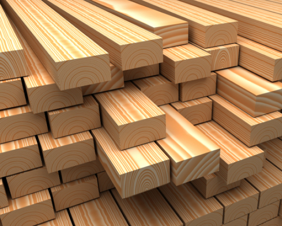
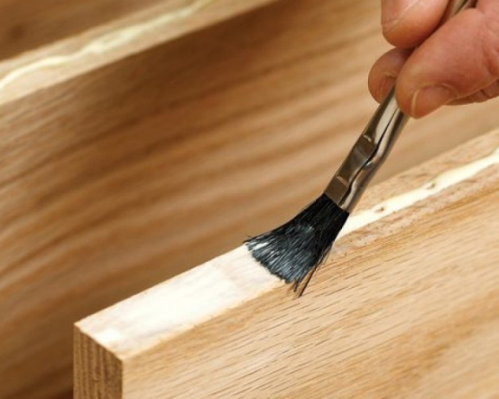

ISO 9001
Мы заботимся о том, чтоб каждый наш покупатель получил качественный надежный и экологически безопасный продукт. Производство дверей компании King Wood Doors сертифицировано на соответствие стандарту ISO 9001 «система менеджмента качества».

ISO 14001
Материалы, которые мы используем при изготовлении дверей экологически безопасны. Мы используем экологически чистый эко шпон и древесину европейского стандарта. Двери компании King Wood Doors сертифицированы на соответствие стандарту ISO 14001 «система экологического менеджмента».
